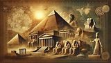
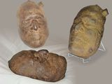

Shop
52 titles covering biblical history, archaeology, prophecy, and more. Each eBook is delivered as a PDF after purchase via PayPal.
THIS COULD BE THE MOST IMPORTANT BOOK YOU WILL EVER READ, in fact, it is more like a library than a book and may even be hazardous to your pre-conceived ideas. Much has been written and commented on concerning the New World Order but perhaps never from a perspective as broad as this. Throughout its 600+ pages, a dazzling display of light shining into darkness develops in the fields of science, history, and religion. Biblical claims are thoroughly vindicated and a vast deception is exposed.
Buy Now ($6.95)Contrary to many claims Noah's Arks resting place is known, has been examined and proven by scientific analysis. And it's exactly where the bible said it is. Enjoy this thrilling adventure as you make your way through this surprising discovery.
Buy Now ($4.95)Almost every civilisation on earth has its version of the Great Flood but is there evidence of the division of languages at Babel? Some field work has been done, searching for the remains of the infamous tower. The Bible states " … nothing will be restrained from them, which they have imagined to do." What could this mean? What were they capable of doing? There is evidence that man after the Flood possessed tremendous knowledge from the pre-Flood world. Had they remained united with one language, and under Nimrods religious system disaster would result sooner rather than later.
Buy Now ($4.95)Did Dinosaurs really live millions and millions of years ago and die out after an asteroid hit the earth 60 million years ago. Well perhaps not actually, the ever-evolving evolution theory is running out of wiggle room and there is evidence that suggests that a few dinosaurs and great marine reptiles could still be alive today, teetering on the edge of extinction. In addition, Dinosaurs and men have been found together in the geological records. Enjoy this short and concise book that will certainly set things straight that pertain to Dinosaurs.
Buy Now ($2.95)Many have claimed confidently that people ultimately end up in one of two possible locations after death. One is often described in Ghastly terms and is known as Hell. This implies that man possesses an immortal soul. Perhaps this is "well meaning" but are the scriptures in complete agreement with this and / or have the traditions of men played a role. You may be shocked to know the truth by this concise and yet thorough examination of this very important subject.
Buy Now ($4.95)Discover the big problems with dating the earth and all that is in it, from a scientific, anthropological and historic perspective. As you move through the pages of this book you will confirm your confidence in scripture and become more resolute in how it can be trusted in the matters concerning origins and creation.
Buy Now ($3.95)Islam after its decline in the 19th and 20th centuries is once again becoming a player to be reckoned with and many in Europe and the USA, are expressing alarm at its rapid rise and impact. Has the Vatican played a role and what if anything does the bible say on this topic. Is Jerusalem a prize up for grabs and will America be caught in this vortex.
Buy Now ($4.95)Is Jesus a case of mistaken identity? Did Jesus Christ really exist? Was Jesus just a fairy tale copied from pagan "christs"?. In this epic volume discover the truth about this immense topic. So much is claimed today to minimalize and corrupt the scriptural version of Jesus, this book provides a most thorough examination of history and ensures that you are fully aware of this vast deception and superbly equipped to deal with it.
Buy Now ($5.95)The post flood world began with a technological understanding that still challenges academia. Deadman's secrets detail over 1000 amazing discoveries, from the pre flood and post flood world that baffle the modern mind and establish the Biblical Creation to flood account.
Buy Now ($5.95)Despite claims to the contrary, David and Solomon did exist and were the triumphant builders of a great nation that dominated Palestine and the surrounding areas. They were part of the Phoenician Empire ( as the Bible defines -beginning with David and Hiram ) sailing ocean going ships they conveyed commerce and exploration across the Atlantic and into the Pacific.
Buy Now ($4.95)Several claims are made in the Da Vinci code that challenge the authentic Jesus of scripture. Many are considered true in the mainstream but are they? Well the truth be told the Da Vinci code Hoax reveals the deliberate attempt to deconstruct the Christ of the Bible, armed with this knowledge you can refute the lies and establishing the truth.
Buy Now ($4.95)After investigations into more than 30 countries, so many anomalies surfaced that could no longer be ignored. A global pattern had emerged, supplying evidence of a former worldwide civilization of astonishing proportions!
Buy Now ($4.95)What could be so threatening about archaeological finds that they need to be "restricted"... How on earth could 2,000 ancient, stone structures pose a threat to national security? And how many, many more discoveries are creating quite a stir.
Buy Now ($4.95)
Could there be ways in which an earlier science and technology was superior to today's. Is it possible that early man reached a level of sophistication that we have not attained too. The answer has to be yes as the evidence is undeniable. and the evolutionary story has far to many anomalies to sustain its theory any longer. You'll be amazed to discover that there are 64 secrets still ahead of us .
Buy Now ($4.95)As the Post Christian world became increasingly secular, 5 amazing discoveries were revealed to shock them back to their roots. Noah's Ark, The Red Sea crossing, The real Mt Sinai, Sodom and Gomorrah and the Ark of the Covenant. Every objection and every question has been answered.
Buy Now ($4.95)The One World Government agenda has been preparing for several hundred years. Only now does it appear within reach. And the anti-Genesis attack has been a key part of this strategy for almost as long. The plotters fear its power over the minds of the people. They know that once it captivates the minds of the masses it has power to undermine plans to rule and suppress. Be prepared to see Genesis in a new light as you discover how universally relevant it is, as a valid source for History, Archaeology and Cultural Anthropology.
Buy Now ($5.95)
A fossil human skull that was found in Carboniferous strata -supposedly between (358.9 to 323.2 million years old) and (323.2 to 298.9 million years old), near Mahanoy City, Pennsylvania, was way too hot to handle for the Smithsonian. For objects to become petrified, two things are ALWAYS required, it must be buried rapidly, and it must have water flowing through it. This is undoubtable evidence of the global flood recorded in Scripture.
Buy Now ($3.95)Has scientific knowledge refuted scripture and the existence of a creator or have the scientific thought guardians rewritten history to present a one-sided account of our origins? Is it true that the scientific elite has suppressed knowledge about fossils, biology and dating systems that, if known, would destroy evolution? Has the scientific establishment tolerated fraud and employed horrific methods to keep this knowledge hidden? Is it true that science textbooks have been promoted by men who possessed a political agenda? The social consequences are staggering! The solution is mind blowing and the discoveries are toppling evolution.
Buy Now ($4.95)A fascinating story that researches the famed Biblical Prime Minister of Egypt. Discover how history, etymology and archaeology together have contributed to the discovery of Joseph in ancient Egypt
Buy Now ($3.95)At times we hear of astonishing things that occur to people. Sometimes such accounts almost strain credibility. However, events that we might call miracles do occur. And what we might call "supernatural" could be perfectly natural to an Almighty God. In deed scripture is full of such events. This book documents 73 occurrence's that demonstrate that miracles are real and that the God of scripture is still actively working in His universe.
Buy Now ($3.95)This excellent work blows the cover on a deceitful operation by Zecharia Sitchin who masqueraded as an authority on several ancient world topics. By making untruthful claims that his books reference evidence found in Sumerian texts. Proving certain claims false this books sets the record straight concerning the Sumerian text claims.
Buy Now ($4.95)This book is about people, and is a fascinating journey, as we peep into our past. You shall discover why a population died and how some of these lost cities were found. Lost Cities in the Desert, Drowned Cities, Lost Cities in the Clouds, City Folk who become savages and Cities destroyed by fireballs is all revealed in Lost Cities.
Buy Now ($4.95)There is a swag of different bibles to choose from today but how should we decide which is best. It may be time for some of us to know where the Bible has come from. Historically, there have been two streams of Biblical manuscripts. This book provides a detailed and comprehensive explanation on the origins of the various bibles and the reason why behind them.
Buy Now ($4.95)The biblical Joseph of Arimathea was well educated, talented and a man of refinement. He was one who possessed many talents. His political and business ability was extraordinary. In fact, he was reputed to be one of the wealthiest men in the world of his time. Get ready to embark on an amazing journey of discovery through the Roman world of the 1st Century. You may even be shocked perhaps by what is revealed.
Buy Now ($3.95)Discover the truth behind Star Signs and the Zodiac Mystery. All nations had an original zodiac with a common source and the zodiac belongs to astronomy not astrology. The ancients through astronomy new of the Gospel in the stars and how from earliest time the constellations were mapped and ordered, supporting what Genesis says ...they should be for "signs".... Yes the original Zodiac revealed the Messiah in the sky but the corruption of the Zodiac reduced it to astrology and the Messianic meaning was lost.
Buy Now ($4.95)Revealing the tactics of the Militia of the Pope and the Jesuits. These books unveil their Secret Instructions, outlining methods for manipulation and control. Exploring the Jesuits' influence on politics, education, and religious practices. Set against the backdrop of historical events such as the Reformation and the French Revolution.
A historical account exposing convent life and practices.
Buy Now ($1.95)A historical exposé of covert religious-political operations.
Buy Now ($1.95)Tracing the historical influence and activities of the Jesuit order.
Buy Now ($1.95)A historical account of the rise and influence of the Roman Catholic system.
Buy Now ($1.95)A historical examination of Roman Catholic influence and the Jesuit order.
Buy Now ($1.95)Tracing the political and religious reach of Roman Catholicism throughout history.
Buy Now ($1.95)Revealing the tactics of the Militia of the Pope and the Jesuits. These books unveil their Secret Instructions, outlining methods for manipulation and control. Exploring the Jesuits' influence on politics, education, and religious practices.
Buy Now ($1.95)An investigation into the office and influence of the Jesuit Superior General.
Buy Now ($1.95)An examination of the political influence and covert operations attributed to the Jesuit order.
Buy Now ($1.95)A historical overview of the Society of Jesus and its influence on world events.
Buy Now ($1.95)A complete Chapter-by-Chapter highly detailed analysis of The Secret History of the Jesuits by Edmond Paris. Including the full introduction by ex Jesuit Dr. Alberto Rivera and the original forward that references Adolphe Michel. Exposing the hidden political, financial, and military operations of the Society of Jesus from its founding in 1534 through the mid-20th century. Providing you with the exact historical examples, specific names, and direct quotes used by the author to support his thesis. No doubt this serves as an exhaustive reference document for research and historical analysis.
Buy Now ($4.95)Jonathan Gray shows how the entire biblical narrative, from the anthropological perversions of early human blood sacrifices to the exact mathematical timing of Daniel's prophecies and the physical mechanics of the crucifixion led to the fullfillment of Gods planned atonement for mankind. Finalised by Christ's blood dripping down the earthquake fissure onto the Ark of the Covenant, and thus fullfiling the substitutionary atonment types under the old covenant . And He has supplied the evidence within the historic and Archaeological record for all to see. This almost 600 page volume is a true master piece in historic research, archaeological confirmation and theological exegesis.
Buy Now ($5.95)This summary of Jonathan Grays classic Ark of the Covenant, takes the reader on a short but concise journey from anthropological perversions of early human blood sacrifices to the exact mathematical timing of Daniel's prophecies and the physical mechanics of the crucifixion, involving Christ's blood flowing down the earthquake fissure onto the Ark of the Covenant. Fullfiling the ancient system of substitutionary atonement, and demonstrably completing the atonement for mankind. And now He has supplied the physical evidence within the historic and Archaeological record for all to see.
Buy Now ($1.95)The British Empire is gone but what replaced it is hiding in plain sight. Demise of Ephraim traces the unbroken thread of Western power from the tribes of ancient Israel to the offshore accounts of the modern elite. An ambitious project delivering a rich body of research and tying many loose threads together in as concise a manner as possible.
Buy Now — PayPal ($4.95)This book is designed to give those involved in evangelism or those who believe they're called to preach, a scripturally sound basis to operate from. Filled to the brim with scripture, scriptural examples and testimonies it certainly packs a lot of punch per page.
Buy Now ($4.95)Two billion or more people, with their astonishing technology, vanished from the face of the earth. As far fetched as this may sound, It appears that this lost super race beat us to the moon, computers and nuclear war. Dead Men's Secrets, reveals some startling information about this super civilisation and this book covers additional material about the disaster that reduced that advanced world to nothing but artefacts.
Buy Now ($5.95)Much has been said on this subject, Ron Wyatt has his distractors and supporters. And many refuse to test the claims. So has Noah's Ark really been found, and what important message could it have for our time. Explore the concise facts here, including an Archaeologist skeptic who was man enough to take on Ron at his own expense rather than remaining an armchair critic.
Buy Now ($1.95)The Corpse Came Back begins with the handful of survivors on board Noah's Ark and their journey into the unknown, new world. Venturing further you will embark on a phenomenal journey of scientific and historic study as you discover what happened to the earth due to the flood and how it affected the survivors culturally, as they multiplied on the earth.
Buy Now ($5.95)Practical guidance for prospering in health, alongside spiritual well-being (3 John 1:2).
Buy Now ($3.95)Health and dietary guidance in keeping with the ministry's theme of prospering in body and soul.
Buy Now ($3.95)Few questions have occupied the human imagination more persistently than the question of how history ends. For centuries, the conviction that the present order of things is not final and that something decisive lies ahead, something that will resolve the tensions, injustices, and incompleteness of the present age, has proven remarkably resilient. It surfaces in mythology, in philosophy, and above all in the great Abrahamic monotheistic religious traditions that have shaped the moral and political landscape of the world for three millennia. This excellent study considers the eschatology within 3 traditions — Judaism, Dispensational Christianity, and Islam.
Buy Now — PayPal ($4.95)Alexander Hislop's The Two Babylons is an excellent theological and historical work that has stood the test of time, proving that the traditions, hierarchy, and doctrines of the Roman Catholic Church are not rooted in true biblical Christianity, but are instead a direct continuation of ancient Babylonian paganism. Hislop traces Catholic practices such as the papacy, the mass, monasticism, the use of images, and holidays like Christmas and Easter all the way back to these ancient pagan rituals, clearly showing that the Roman Catholic Church represents the prophetic "Mystery Babylon" described in the Book of Revelation. If you have not had the opportunity of reading this masterpiece, then a short and concise summary may be exactly what you need.
Buy Now ($3.95)Prophecy is about 1/3 of scripture and provides insight into our world in unique ways and Revelation 13 sets up a dynamic between 2 powers that can be identified historically. This may challenge your understanding but I am certain it will not disappoint if you heed the admonition in ACTs 17:11 and 1Th 5:21 -These were more noble than those in Thessalonica, in that they received the word with all readiness of mind, and searched the scriptures daily, whether those things were so. Prove all things; hold fast that which is good.
Buy Now ($4.95)